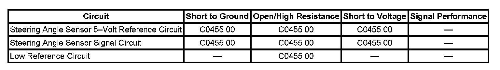

C0455
DTC C0455
DTC Descriptor
DTC C0455 00
Front Steering Position Sensor Circuit
Diagnostic Fault Information
Perform the Diagnostic System Check - Vehicle prior to using this diagnostic procedure. Initial Inspection and Diagnostic Overview

Circuit/System Description
The steering angle sensor supplies input circuits to the electronic brake control module (EBCM) from the Phase A and Phase B, the Index Pulse Phase C circuits, and 1 Analog signal circuit for steering wheel angle. The analog signal is used along with the index pulse to calibrate the steering angle sensor (SAS). The SAS position is then determined by Phase A and Phase B signals. The 2 input signals Phase A and Phase B are approximately 90 degrees out of phase. Once calibrated, the EBCM dynamically interprets the relationship between the Phase A and Phase B inputs, and determines the position of the steering wheel and the direction of the steering wheel rotation.
Conditions for Running the DTC
^ The ignition is ON.
^ Ignition voltage is greater than 9.5 volts.
Conditions for Setting the DTC
^ Opens, short to ground, or voltage on the analog signal circuits.
^ The calculated steering angle from the steering angle sensor does not correlate with the steering angle calculated from the yaw rate.
Action Taken When the DTC Sets
^ The EBCM disables the vehicle stability enhancement system (VSES) for the duration of the ignition cycle.
^ The driver information center (DIC) displays the Service Stability System message.
^ The Antilock Brake System (ABS) remains functional.
^ The VSES Caution indicator turns ON.
Conditions for Clearing the DTC
^ The condition for the DTC is no longer present.
^ The EBCM automatically clears the history DTC when a current DTC is not detected in 100 consecutive drive cycles.
Diagnostic Aids
^ During diagnosis, park the vehicle on a level surface.
^ Inspect the vehicle for proper alignment. The car should not pull in either direction while driving straight on a level surface.
^ Find out from the customer the conditions under which the DTC was set. This information will help to duplicate the failure.
^ The snapshot function on the scan tool can help find an intermittent DTC.
Reference Information
Schematic Reference
Antilock Brake System Schematics
Connector End View Reference
Antilock Brake System Connector End Views
Description and Operation
ABS Description and Operation (Under 8600 GVW ) ABS Description and Operation (Equal to or Over 8600 GVW)
Electrical Information Reference
^ Circuit Testing
^ Connector Repairs
^ Testing for Intermittent Conditions and Poor Connections
^ Wiring Repairs
Scan Tool Reference
Scan Tool Data List for EBCM
Circuit/System Verification
With scan tool installed, clear the DTCs. Turn the steering wheel through its full range and back to straight ahead to center SAS. Using a scan tool, observe the Steering Wheel position parameter changes smoothly while turning steering wheel through the entire range. Correlate zero reading with wheels in the straight ahead position. Drive the vehicle through a variety of maneuvers turning to the left, and to the right and straight at a speed greater than 20 km/h (13 mph).
If the DTC did not set as a current DTC see diagnostic aids.
Circuit/System Testing
1. Ignition OFF, disconnect the harness connector at the SAS.
2. Test for less than 1.0 ohm of resistance between the low reference circuit terminal 2 and ground.
^ If greater than the specified range, test the low reference circuit for an open/high resistance. If the circuit tests normal, replace the EBCM.
3. Ignition ON, test for 4.8-5.2 volts between the 5-volt reference circuit terminal 1 and ground.
^ If less than the specified range, test the 5-volt reference circuit for a short to ground or an open/high resistance. If the circuit tests normal, replace the EBCM.
^ If greater than the specified range, test the 5-volt reference circuit for a short to voltage. If the circuit tests normal, replace the EBCM.
4. Test for 4.8-5.2 volts between the 5-volt reference circuit terminal 1 and the signal circuit terminal 6.
^ If less than the specified range, test the signal circuit for an open/high resistance. If the circuit tests normal, replace the EBCM.
^ If greater than the specified range, test the signal circuit for a short to voltage. If the circuit tests normal, replace the EBCM.
5. Ignition OFF, reconnect the SAS.
6. Disconnect the EBCM harness connector.
7. Test for infinite resistance between the signal circuit pin 4 and ground.
^ If less than the specified range, test the signal circuit for a short to ground.
8. Reconnect the EBCM harness connector.
9. Turn the ignition ON. Turn the steering wheel through its full range and back to straight ahead to center the SAS. Using the scan tool, observe the steering wheel position. The parameter changes smoothly while turning the steering wheel through the entire range and correlate to zero reading with the wheels in a straight ahead position.
^ If the steering wheel position parameter does not change, replace the SAS.
^ If the steering wheel position parameter change, replace the EBCM.
Repair Instructions
^ Electronic Brake Control Module Replacement (W/JL4) Electronic Brake Control Module Replacement (W/O JL4)
^ Control Module References for EBCM replacement, setup, and programming
Repair Verification
Diagnostic Repair Verification